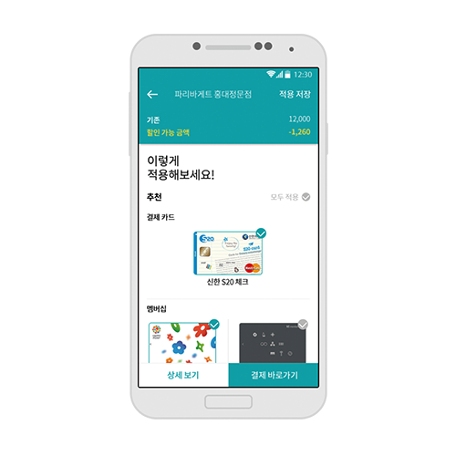
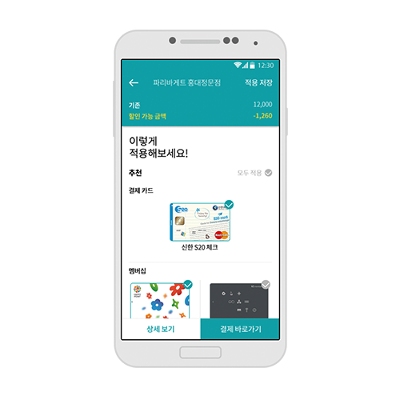

‘풀섬농장’은 경기도에 위치한 두 청년 농부의 자연 순환 유기농 달걀 농장이다. 풀섬농장의 닭들은 자연에 자유롭게 흙과 햇빛에 목욕하고, 항생제, 촉진제,착색제를 섞지 않은 건강한 사료를 먹고 자란다. 닭이 닭답게 살아가야하는 이유, 그들의 이야기를 한 번 들어보자.
‘Farm Pulseom’ is a natural cycling organic egg farm of two young farmers in Gyeonggi-do. The chickens of ‘Farm Pulseom’ are free to bath in soil and sunlight, and eat healthy feed without antibiotics, accelerators and GMO. Let's hear the story of why chickens should live like chickens.

‘진지냐’는 초콜릿 컵과 즐기는 포르투갈 전통 체리술 브랜드다. 포르투갈의 독특한 음주문화를 포르투갈 전통 ‘아줄레주’ 타일 패턴을 응용한 패키지와 함께 소개한다.
‘Ginjinha’ is a portuguese wine made by infusing sour cherry in alcohol and adding sugar together with other ingredients. In Óbidos, ‘Ginjinha’ is commonly served in a small edible chocolate cup. This unique drinking culture from Portugal is presented with a package design that employs the pattern of Portuguese ‘Azulejo’(Portuguese painted ceramic tilework)

한 사람 한 사람의 점이 모여 줄을 이루었다. 줄 관리 어플리케이션 ‘도츠’는 그런 줄을 해체하고 다시 자유로운 점으로 만들어준다. ‘도츠’는 더 이상 줄에 얽매이지 않은 채 자유롭게 위치하고 있는 사람들을 의미한다.
Each dot gathered and became a line. Queue Management System Application, ‘Dots’ breaks up the line and makes them free again. ‘Dots’ means those who are free, not tied in a line
한국인의 소울푸드 라면. ‘라면기록소’는 지금까지 사랑받는 라면 브랜드 중 근 30년 혹은 그 이상의 역사를 가진 8종의 라면을 모아 정리한 아카이빙 웹사이트다. 라면에 대한 역사적 자료를 정리함과 동시에 이를 디자이너의 시각으로 풀어냈다.
‘Ramyon’ is one of Korean soul foods. The ‘Ramyon Archiving’ is an archiving website, which arranges the record of 8 different brands of ramyon that have been the most popular in Korea for around 30 years or more so far, among all the other brands. It summarizes the historical data of ramyons and at the same time specifies the data with designers views.
반려동물과의 이별을 더욱 아름답게 기리고 싶어하는 사람들을 위한 '추모공원 연'. 화초장 납골함과 같이 묻은 씨앗은 곧 공원의 새로운 생명으로 태어나 사람들을 반길 것이다.
Pet Memorial Park (similar to Natural Burials) Branding: Separation from loving companion animals can be reborn as a new life in the park. Please visit the memorial park, which is full of liveliness, not a dark and depressing memorial park. There is a beautiful package to choose the size according to the companion animal and seeds of plants. The user can choose the ashes and seeds. Depending on the type of flower selected, or the desired area, the urn is planted with flowers.
삶의 모습은 삶의 피어나고 지는 매 순간 순간들이 동심원처럼 겹치고 어우러져 만들어낸 무늬이다. 그렇기에 모든 사람들은 각자만의 고유한 삶의 무늬를 가지고 있다. 당신의 삶의 무늬를 담아낸 스카프 브랜드, Kiss Hedone.
The shape of life is a pattern created by overlapping every blooming and falling moment of life as concentric circles. Because people have different moments, so they have their own unique patterns of life. Kiss Hedone, a scarf brand that beautifully embodies the patterns of your life.
 

새는 돈을 막아주는 지출 큐레이션 서비스 토드. 물이 새서 슬퍼하는 콩쥐를 위해 항아리를 막아준 두꺼비를 모티프로 했다. 지출 내역을 분석해 놓치고 있는 카드, 멤버십 혜택부터 더 싼 가격의 상품까지 추천해줌으로 사용자의 새는 돈을 막아준다. 실제 서비스로 준비 중인 프로젝트.
Cost avoidance service Toad helps you shoot money. Because of the leaking of water, the toad that blocked the pot was used as a motif. Users save money by recommending a breakdown of expenditures, from card benefits, membership benefits to cheaper prices. A project that is being prepared as a practical service.
OilOil은 아프리카의 유기농 식용 오일 브랜드이다. 현재 대부분의 식용 오일 시장이 지중해에 집중되고 있지만, 오일오일은 아프리카의 이국적이고 질 좋은 식용오일을 통해 소비자에게 즐거움을 준다.
‘OilOil’ is an edible oil brand from Africa. Currently, most of the edible oil markets are concentrated in the Mediterranean, but ‘OilOil’ gives pleasure to consumers through exotic and high-quality edible oils in Africa.
신진 금속공예가들의 작품을 소비자에게 소개시켜주는 주얼리 큐레이팅 서비스이다. 미술관과 같은 컨셉으로 단순히 제품이 아닌 '작품'으로서 큐레이팅 해주어 작품의 가치를 소비자에게 전달한다.
It is a jewelry curation service that introduces the works of new metal craft designers. Serving the same purpose as an art museum, it conveys the true value of the works via curating them as art pieces, not products.

'별별청'은 유니크한 감각의 발효청 브랜드이다. '꽃잎청'과 '열매청' 두가지 라인으로 나뉘어 다양한 맛을 제공한다. 기존의 청 섭취방식에서 벗어나 다양하고 간편하게 즐길 수 있으며, 나아가 새로운 식문화 경험을 제안한다.
'Byeol Byeol Chung' is a unique cordial syrup brand. You can enjoy various flavors by dividing the two lines of flower and fruits. This brand proposes a new food culture.

유아 및 어린이 아토피 치료를 위한 의료용 미네랄 워터. 70% 수분으로 구성된 우리 몸에 좋은 성분의 물을 공급하는 것은 중요하며, 가장 효과적인 아토피 치료법이 건강한 물을 마시는 것이다. 아토베린은 아토피 치료 효능의 천연식물성분과 면역을 증진시키는 의약 성분을 함유한다.
Mineral water for Atopic children. It is important to supply water of healthful ingredients to our bodies and the most effective way to treat atopic dermatitis is to drink healthy water. Atoberin contains natural plant extracts and pharmaceutical components that are helpful in treating atopic dermatitis.
간략하고 가벼운 생활(light life) 이념의 화차 브랜드.브랜드 포장과 브랜드 영상 추상주의와 현실주의를 융합해서 향기 시각화의 수단을 통해서 브랜드 디자인을 표현하는 것이다.
Flower tea brand of concise and light life.brand packaging and brand video .The integration of abstraction and realism. Express brand design through aroma visualization method
섬세한 감각을 가진 남성들을 위한 뷰티 브랜드, MM. 맨즈뷰티 시장의 확장과 수요에도 불구하고 여전히 충족되지 않는 남성들의 니즈를 위해 기초부터 전문적인 단계까지의 솔루션을 제공한다. 남성의 섬세하면서 직설적인 특성은 흑백 모노톤과 직선적 건축의 요소로 담아내었으며 자신만의 동굴 혹은 가림막을 원하는 남성을 위해 반(半)폐쇄적이면서 아늑한 암실로 분위기를 조성하였다.
Precise Sense, MM is a beauty brand for delicate and sophisticated men. MM offers the solutions from the basics to the professional levels for men who are still not fulfill their desires. The precision and straightforward features of men were captured as elements of black & white monotones and linear architecture. Also, semi-closed and cozy darkroom was created for men who wanted their own.
Wootuyu는 수면에 도움을 주는 나무 제품 브랜드이다. 나무가 가진 효능을 통해 안정적이고 편안한 수면을 선사한다. Wootuyu를 통해 동화처럼 펼쳐진 포근한 숲 속에서 깊은 잠에 빠져보자.
Wootuyu is the wood product which helps customer sleep well. Through the therapeutic effect of the tree, you can relax and have comfortable night time. With our Wootuyu, you can fall a sleep as if the forest hugs you.
20세~30세 소비자들이 위해서 간략하고 고요한 생활 이념과 여유 있고 한가한 생활 방식 스타일 전달하는 디자인 뷰티 화장품 브랜드이다.고전주의 원소를 표현하는 화장품 시리즈 등 산품이다.
Designed for consumers aged 20 to 30 years to reflect the concept of simplicity and quiet life and leisure lifestyle cosmetics brand.A series of finder branded products with classic elements.